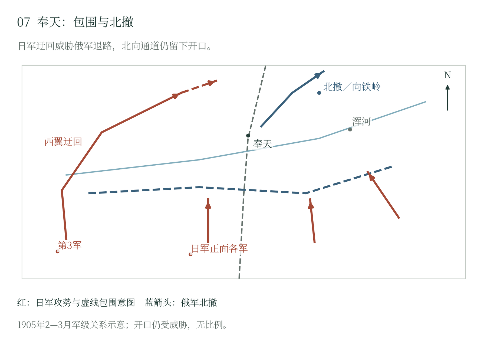

第七章 第三军北调与奉天会战
从旅顺到南满野战军
旅顺投降以后，乃木的第三军开始准备北上。接收守军、补充损耗、重整部队，都须逐项办理。重炮和器材主要走铁路，大部队沿陆路行军；因米申科骑兵在日军后方活动，少量步兵先被急送营口。军部、先头部队和主力各有行程。要把围城军队送上新的战场，统帅的一道调令只是开端。 〔1〕
围城后的第三军也发生编制变化。第十一师团转入川村景明指挥的东路部队，第一、第七、第九师团组成乃木北调后的主要力量。到二月十九日至二十日前后，第三军在太子河南侧、日军左翼后方集中。美国观察员库恩将其初始迂回兵力估为约七万五千人，并明确包括非战斗人员；这支军队的机动与补给，要依靠相当数量的勤务部队才能实现。〔2〕
北调预先改变了补给布局。日方在小北河一带为三个师团积存约一个月物资，分别从辽阳和营口、牛庄方向输送，再向西北设置前进兵站。围城时部队围绕固定目标作业，现在要在开阔正面上不断移动，粮秣和弹药必须随部队转向。第三军的战略价值，取决于它能否在俄军西侧连续行军和交战。〔3〕
库恩三月六日沿补给线所见，某段兵站日需约三百辆车，实际可得约为所需一半。车力不足时，粮食、马料、燃料和医疗用品之间就要排列先后。这是他所见地点的情况，却具体显示了迂回作战的负担：部队走得越远，运输车辆在途中占用的时间越长，前沿获补越难保持原有速度。〔4〕
奉天两翼的战略设计
俄军继续依托铁路集结，第二集团军在西，第三集团军居中，第一集团军在东。考尔巴斯接替格里彭贝格统辖第二集团军，比尔德林转掌第三集团军，李涅维奇仍指挥第一集团军，库罗帕特金总领全局。沙河、浑河及奉天附近构成几层阵地，北面经铁岭连接更远的铁路后方。〔5〕
俄方原定攻势几度延期，既要判断日军在东部山区的行动，也担心西北方向对铁路的袭扰。从部署本身看，保护铁路、维持长正面和组织主动进攻，已经在争夺同一批机动兵力。〔6〕
库罗帕特金在战后检讨中承认：“我没有坚持建立足够强大的总预备队，这是我的错误。”（据1909年英译本自译。）他还记述，黑沟台以后曾下令从战线上尽量抽出部队，集中守住要点，把省下的兵力留作预备；执行时却过分倚赖各集团军司令官自行判断，自己也没有充分督促他们严格照办。统帅知道应把机动兵力留在手中，却未能让这条原则落实到部署。随后两翼接连告急，预备队反复往返，他的检讨便有了具体的战场注脚。〔7〕
日方的计划以几路行动共同迫使俄军分兵：川村的部队从东部山区施压，黑木、野津和奥保巩各军攻击既有正面，乃木则从最西侧向北迂回。东路需要实质推进，才能吸引俄军注意；西路又需保持隐蔽和行军速度，才能在对方调整以前威胁退路。两翼距离很远，最终效果取决于中央攻势和后勤能否支撑这种展开。〔8〕
二月二十二日至二十四日前后，东路在清河城方向发起攻击，俄军后撤并调兵增援。第十一师团的出现，使俄方一度判断乃木的主要兵力可能也在东面。第一西伯利亚军因此被移向东部，帮助稳定第一集团军，却减少了西翼可以及时调用的兵力。日军随后在西侧展开时，俄方又需要把部分兵力调回来。〔9〕
西翼迂回与俄军反击
二月二十七日，第三军开始西翼迂回，在四方台等处遭遇抵抗，继续向北展开。其动作逐渐证实了日本主力正在西侧逼近的事实。俄军把注意力转向这一方向，预备队和原已调往东部的部队再次受命转移。日方通过两翼压力造成的效果，主要体现为俄军在战斗期间不断改换集结方向。〔10〕
三月二日至三日，俄军在沙岭附近反击，对日军第一、第七师团形成压力。第三军的推进受到阻碍，日本正面各军则继续攻击，限制俄军抽出更多力量。日方既需要乃木走得足够远以威胁铁路，也要让他的部队经受住外侧反击；俄方则希望在包围范围扩大以前，击破这一相对突出的兵力集团。〔11〕
俄军仍有反击的兵力，难处在于把它们同时送到需要的地方。三月四日夜，第十七军的方向和任务变动，所属部队朝不同方向行动。考尔巴斯又让部分攻击等到右翼取得进展以后再发起，其他部队只好继续等候。危机确实逼迫统帅改变部署，反复改派却也耗去了反击所需的时间。库罗帕特金和各集团军未能把局部优势合到一处。敌军的迂回固然危险，这些调度上的失机也有统帅本人的责任。 〔12〕
三月六日，日军接合部一度出现危险。第一师团转移，第九师团尚未充分衔接，俄军攻击威胁第七师团一带。日方以当地部队和预备力量支撑，待第九师团进入才逐步填补间隙。这一战斗说明，俄军反击形成了实际威胁，局部压力曾接近改变西翼局势；协同迟滞则使这种压力难以持续扩大。〔13〕
日本的包围也受地理与兵力约束。三月七日，日军炮火开始威胁铁路附近，骑兵对虎石台方向的行动却未能切断主线。乃木越向北，部队之间的距离越大，侧翼与补给线越长；日本其他军仍须压迫俄军，使其无法集中打击这一延伸的外翼。〔14〕
从缩短阵线到总退却
三月七日，库罗帕特金命第一、第三集团军在夜间向浑河附近收缩，希望缩短正面并释放兵力支援西翼。这次行动仍以继续作战为目的。七日至八日夜，部队撤出原阵地、过河和重新部署，一部分行动保持秩序；日军随即跟进，俄军还须在新防线上组织炮兵、联络和侧翼掩护。〔15〕
新的集中时间十分有限。日军西侧继续北伸，东侧也逼近浑河防线，俄军增援沿途不断接到改变任务的命令。三月九日风沙影响观察与通信，局部突破及退路受威胁的报告进入总司令部。库罗帕特金最终在当晚决定向铁岭总退却，把保存主力置于继续守住奉天之前。〔16〕
总撤退需要将各军分配到不同道路，同时撤出仓库、医院、辎重和伤员。计划中应提前后送的部分物资仍留在附近，三月十日道路上军队与车辆相互拥塞。库罗帕特金指责先前撤运命令未获执行，这属于其责任解释；现场后果则是战斗部队、勤务车辆和掉队人员混行，指挥与通信进一步困难。〔17〕
日军在东西两侧施加截击，部分俄军部队被隔断或被俘。俄方后卫仍在铁路以西等地组织抵抗，吸收散兵，掩护主力通过。日本两翼之间尚有未闭合的间隔，第七师团在北陵一带的前出部队也一度孤立，第一师团到三台子附近时已是十日晚间。俄军大量人员正是在这些时间与空间的间隙中北撤。〔18〕
退却时最难随军而行的是伤员。哈瓦德记下道路上的车辆拥塞、受阻的救护运输，以及三月十日晨离开的最后一批救护列车。一些重伤员和医护人员留在了日军占领区。部队撤出之后，仍有人留在原地等待照护；撤运的先后，对他们而言就是能否离开战场的区别。 〔19〕
胜利的范围
日军进入奉天并继续追击，俄军退往铁岭及更北地区。日本夺取了重要城市，瓦解俄军原有阵线，缴获物资并俘获大量人员；俄军主力也确实从未封闭的通道撤出。日军疲劳、运输距离增长和部队间隔，影响了继续追击的强度，俄军后卫行动则为重新组织提供时间。〔20〕
美国编纂史所列俄军损失为阵亡八千八百九十九、负伤五万一千零二、失踪三万一千五百八十九，合计九万一千四百九十；其中失踪包含被俘，后续人员结局另需核对。日军死伤在该书中估为约五万人，后来JACAR专题约计七万人。两种日军统计的范围尚待进一步对齐。数万人的损失留给双方沉重的补员与救护负担，俘虏的收容也继续占用战后资源。 〔21〕
奉天是日本在大陆取得的又一次大胜，原定合围仍留下了出口。俄军退走的主力与北方持续到来的援兵，使战争还有继续下去的力量。日本若再向北追，便须把粮秣、弹药和伤员运送到更远的地方。陆上的胜势已经形成，俄国从欧洲派来的舰队却还在东航；它能否抵达并改变海上局面，将直接关系到日本能否守住这些战果。

乃木第三军从西侧迂回，东路兵力和正面各军同时施压，迫使俄军反复调兵。三月九日至十日俄军经尚未闭合的间隔北撤，部分部队遭截击，主力则得以退出并重新组织。
随文简图 · 自然地理底图：Natural Earth；历史依据见本章注及大图7逐图来源。大图7（图册第7页）
本章注释
- 〔1〕 A301，第三部分，印页80—81 ↩
- 〔2〕 A003，印页105—110；A301，第三部分，印页81 ↩
- 〔3〕 A301，第三部分，印页80—83 ↩
- 〔4〕 A301，第三部分，印页82 ↩
- 〔5〕 A003，印页101—110 ↩
- 〔6〕 A201，印页268—273 ↩
- 〔7〕 A201，印269—271；末句接本章所叙后续调动 ↩
- 〔8〕 A003，印页110—118 ↩
- 〔9〕 A003，印页111—115；A201，印页273—274 ↩
- 〔10〕 A003，印页113—119 ↩
- 〔11〕 A003，印页117—119 ↩
- 〔12〕 A003，印页119—124；A201，印页276—280 ↩
- 〔13〕 A003，印页124—126；A201，印页278—280 ↩
- 〔14〕 A003，印页127—128 ↩
- 〔15〕 A003，印页128—129；A201，印页280—281 ↩
- 〔16〕 A003，印页130—133；A201，印页282—283 ↩
- 〔17〕 A201，印页283—286 ↩
- 〔18〕 A003，印页133—134 ↩
- 〔19〕 A301，第二部分，印页47—50、67—68、104 ↩
- 〔20〕 A003，印页134—135；A301，第三部分，印页81—83 ↩
- 〔21〕 A003，印页134；A401，解说 ↩